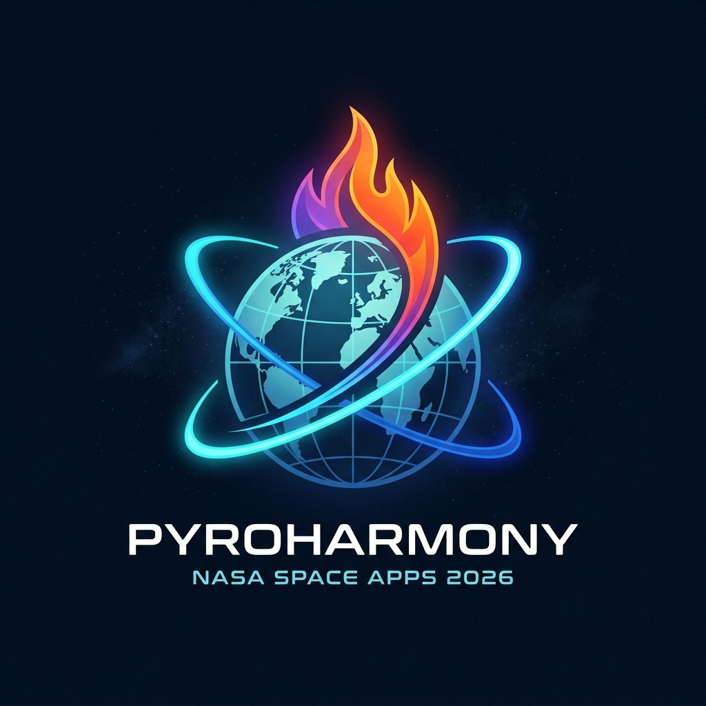

Cross-Sensor Fire Anomaly Engine & Unified 20-Year Burning Activity Calendar

Los satélites de observación terrestre de la NASA han registrado anomalías térmicas y fuegos activos por más de dos décadas. Sin embargo, el registro histórico está fracturado: MODIS (a bordo de Terra y Aqua) operó desde el 2000 con píxeles de 1000 metros, mientras que VIIRS (a bordo de Suomi-NPP y NOAA-20) comenzó en 2012 con sensores de alta sensibilidad de 375 metros.
Debido a este salto tecnológico, VIIRS detecta entre 3 y 5 veces más focos que MODIS para un mismo evento, generando una inconsistencia severa. Los administradores del fuego, científicos y bomberos no pueden saber con certeza si la temporada actual es verdaderamente histórica o si el aumento aparente es un artefacto de la mayor resolución del sensor.
El equipo AlgoXplorers desarrolló PyroHarmony: una solución de ingeniería de software y datos espaciales que reconcilia matemáticamente ambos sensores en una métrica unificada de Potencia Radiativa de Fuego Armonizada (Harmonized FRP) y despliega un Calendario de Actividad de Fuego (Burning Activity Calendar) interactivo que detecta anomalías estadísticas en tiempo real para cualquier Área de Interés (AOI).
Para responder con exactitud a la pregunta de la NASA ("determine if these changes are what scientists call significant"), el motor de AlgoXplorers implementa un pipeline estadístico riguroso:
No se comparan puntos GPS aislados. Se realiza una indexación espacial mediante una malla regular (hexágonos H3 resolución 6 o cuadrícula 0.1° × 0.1° ≈ 11 km). Cada celda C(i,j) acumula las observaciones satelitales.
El conteo de píxeles está sesgado por la resolución óptica. El motor utiliza la Potencia Radiativa del Fuego (FRP, en Megawatts), que cuantifica la tasa de consumo de biomasa y energía emitida, permitiendo calibración termodinámica.
Durante 12 años, ambos satélites pasaron por las mismas zonas. Se ajusta un modelo de regresión ponderado por cobertura de suelo (bioma forestal vs pastizal) para derivar la función de transferencia:
FRP_harmonized = α(bioma) * FRP_VIIRS + β(bioma) * FRP_MODIS
Para una calibración física real, es indispensable considerar la mecánica orbital de las constelaciones heliosincrónicas LEO y su interacción con el comportamiento diario del fuego:
| Satélite | Sensor | Cruce Ecuatorial Local | Resolución | Comportamiento Térmico del Fuego |
|---|---|---|---|---|
| Terra | MODIS | 10:30 AM (descendente) / 10:30 PM | 1.000 m | Combustible húmedo matutino; fuego de baja intensidad o en ignición incipiente. |
| Aqua | MODIS | 01:30 PM (13:30) (ascendente) / 01:30 AM | 1.000 m | Entrada en el pico térmico diurno; vientos más fuertes y menor humedad relativa. |
| Suomi-NPP | VIIRS | 01:30 PM (13:30) (ascendente) / 01:30 AM | 375 m | Pico térmico diario capturado con píxeles de alta resolución (detecta micro-quemas). |
| NOAA-20 | VIIRS | 02:20 PM (14:20) (50 min después) | 375 m | Confirmación del pico extremo de propagación y dispersión convectiva. |
Para determinar si una temporada de fuego es científicamente anormal, calculamos:
μ(semana) y el desvío estándar σ(semana).
Z = (FRP_actual - μ_historica) / σ_historica
Z < 1.0: Actividad de fuego dentro de la variabilidad normal.1.0 ≤ Z < 2.0: Actividad moderada / temporada seca anticipada.Z ≥ 2.0 (p < 0.05): Anomalía Estadísticamente Significativa (Evento extremo, alerta temprana activada).En la provincia de San Luis (31°50'S - 36°16'S / 64°55'O - 67°15'O), la temporada crítica ocurre a finales de invierno y primavera (semanas 32 a 45, agosto a noviembre), cuando las heladas severas secan el pastizal y confluyen con ráfagas secas y cálidas de Viento Zonda (humedad relativa menor al 10%) en las Sierras Centrales y Comechingones (El Trapiche, Merlo, Potrero de los Funes, La Punta).
3. Procedencia y Validación de Datos Oficiales de San Luis:
MCD14DL, VNP14IMGTDL y VJ114IMGTDL.El sistema fue diseñado con enfoque en alta concurrencia, procesamiento multihilo y consumo eficiente de memoria para manejar millones de registros de la NASA sin colapsar el servidor.
| Módulo | Función Principal | Detalle Técnico / Implementación |
|---|---|---|
| 1. Ingestion Engine | Descarga y parseo masivo de datasets NASA FIRMS. | Worker multihilo capaz de procesar streams CSV/Parquet de 20 años de MODIS (MCD14DL) y VIIRS (VNP14IMGTDL). Filtrado automático de reflejos solares y antorchas fijas de gas. |
| 2. Spatial Aggregator | Binning geográfico en memoria. | Indexa latitud/longitud en celdas espaciales de 0.1° utilizando diccionarios hash ultrarrápidos, acumulando FRP, temperatura de brillo y confianza de detección. |
| 3. Calibration Core | Armonización cruzada de sensores. | Aplica el factor de escala multivariado para unificar la resolución de 1000m de MODIS a la escala energética de VIIRS 375m. |
| 4. Anomaly Service | Cálculo de series de tiempo y Z-Scores. | Genera la matriz de 52 semanas × 26 años (2000-2026), calculando la media móvil, desvíos y alertas de significancia. |
| 5. High-Speed API | Exposición de endpoints REST para la UI. | Respuestas JSON cacheadas en milisegundos con compresión GZIP: /api/calendar, /api/hotspots, /api/anomalies. |
Para garantizar escalabilidad global, tolerancia a fallos y una experiencia interactiva sin latencia durante la evaluación del jurado de la NASA, el equipo AlgoXplorers implementó una arquitectura basada en Supabase, Netlify y Three.js:
PostgreSQL con extensión PostGIS: Permite indexar millones de puntos térmicos mediante geometrías espaciales, ejecutando consultas de rango (ST_DWithin) y agregaciones a celdas hexagonales H3 en milisegundos.
Edge Functions: Ejecutan el algoritmo de calibración matemática y cálculo de Z-Score sin sobrecargar servidores locales.
Deploy Continuo desde GitHub: Cada commit en el repositorio compila y despliega la aplicación de forma atómica en menos de 90 segundos.
Disponibilidad Mundial Garantizada: Los jueces de la NASA en Estados Unidos, Europa o Asia evaluarán la app desde los nodos Edge de Netlify con latencias mínimas y compresión Brotli activada.
Globo Terráqueo 3D Interactivo: En lugar de un mapa plano 2D genérico, Three.js renderiza la Tierra con texturas de elevación y shaders personalizados que hacen brillar los focos según su Potencia Radiativa (FRP).
Rendimiento a 60 FPS: Emplea instanced meshes y shaders WebGL para renderizar más de 100.000 puntos térmicos simultáneamente sin caídas de cuadros.
Matriz visual de calor interactiva inspirada en GitHub commits pero aplicada a biomas terrestres:
Visualizador Three.js conectado a la base espacial de Supabase:
Semáforo de alerta temprana para brigadistas y defensa civil:
Demostración visual del salto instrumental que resuelve el reto de la NASA:
Exportación en 1 clic de informe técnico vectorizado:
Flexibilidad geográfica total para brigadistas locales:
.geojson de parques nacionales o reservas provinciales.Honestidad científica radical accesible por los jueces:
Inmersión táctica con Web Audio API:
Inspirado en tragedias reales (Granite Mountain) donde brigadistas murieron encerrados por el fuego al no poder ver a través del humo denso. PyroHarmony incorpora un módulo táctico de vida o muerte:
Aprovecha el desfase orbital entre Suomi-NPP (13:30) y NOAA-20 (14:20). Si en esos 50 minutos la energía térmica salta más de un 150% ($\Delta FRP > 150\%$), el motor detecta una tormenta de fuego convectiva explosiva.
Los canales térmicos de 3.9 µm de VIIRS penetran el humo denso donde drones y humanos son ciegos, detectando focos secundarios por pavesas (spotting) que se inician a espaldas de la cuadrilla.
Disparo automático de orden de "REPLIEGUE INMEDIATO A ZONA SEGURA" a los handies y teléfonos de la cuadrilla, activando una baliza física IoT con sirena (ESP32/LoRa) en el camión de bomberos.
Permite a investigadores de la NASA ajustar en vivo los coeficientes $\alpha$ y $\beta$ de regresión y umbrales de Z-Score sin tocar código, con botón de restauración a la línea base oficial.
Perfiles diferenciados: SuperAdmin (infraestructura), Scientist (fórmulas), Responder (brigadista/SitRep) y LandManager (parques y quemas).
Envío automatizado de alertas de emergencia ante anomalías críticas ($Z \ge 2.0$) a través de WhatsApp Webhook, bot oficial de Telegram (@PyroHarmonyAlertBot) y Email con SitRep adjunto.
PyroHarmony responde a las exigencias del NASA Space Apps Challenge 2026 vinculando sus algoritmos directamente con tres niveles de toma de decisiones del mundo real:
Organismos de Referencia: San Luis Solidario, Servicio Nacional de Manejo del Fuego (SNMF), US Forest Service (USFS), CAL FIRE, CONAF (Chile).
Problema Real: La fragmentación de datos confunde quemas pequeñas con frentes destructivos. En quebradas con viento Zonda, una decisión tardía causa el atrapamiento fatal (burnover).
Solución PyroHarmony: Radar LACES en la ventana de 50 min. Si ΔFRP > 150%, dispara orden de repliegue a la Zona de Seguridad y emite el reporte SitRep por radio VHF/HF.
Organismos de Referencia: Direcciones Provinciales de Defensa Civil, Ministerios de Seguridad, Centros de Operaciones de Emergencia (COE) y enlaces del Marco de Sendai (ONU).
Problema Real: La falsa ilusión de que los fuegos se cuadruplicaron en 2012 impide justificar presupuestos con rigurosidad científica.
Solución PyroHarmony: Consulta el Z-Score Climatológico semanal. Si Z ≥ +2.0 (p < 0.05), cuenta con respaldo matemático para declarar la Emergencia Ígnea Provincial y movilizar aviones hidrantes.
Organismos de Referencia: CONAE, NASA Earth Science Division, Copernicus CAMS, INTA / CONICET y Universidad de La Punta (ULP).
Problema Real: Reconciliar 26 años de series MODIS y VIIRS sin violar la física termodinámica ni el sesgo de Dozier.
Solución PyroHarmony: Aplica regresión cruzada con conservación de escala (α + β = 1.00) y biomasa de Wooster (Ce = 0.368 kg/MJ), exportando datos en GeoJSON y CSV bajo principios FAIR y NASA TOPS.
| Tiempo | Escena / Visual en Pantalla | Voz en Off (Locución) | Efecto / Texto |
|---|---|---|---|
| 00:00 - 00:07 | Imágenes satelitales dramáticas de columnas de humo e incendios forestales en la Tierra. Superposición gráfica con satélites Terra (2000) y Suomi-NPP (2012). | "For over two decades, NASA satellites have watched our planet burn. But when sensors evolved, our ability to compare the past with the present broke down." |
Texto en pantalla: 20 Years of Fire Data: Fractured. |
| 00:08 - 00:18 | Pantalla dividida: a la izquierda MODIS (cuadrícula gruesa de 1 km), a la derecha VIIRS (cuadrícula nítida de 375 m). Se muestra cómo VIIRS detecta 4 veces más focos. | "VIIRS detects smaller fires than MODIS, creating an artificial surge in data. Emergency managers can't tell: is today's wildfire a historic anomaly, or just a new sensor effect?" |
Gráfico comparativo: MODIS (1km) vs VIIRS (375m) |
| 00:19 - 00:32 | Transición con el logo de AlgoXplorers. Se abre el software PyroHarmony en pantalla completa mostrando el mapa armonizado en tiempo real. | "Meet PyroHarmony, created by AlgoXplorers. We engineered a cross-sensor calibration pipeline that harmonizes 20 years of NASA FIRMS records into a single thermodynamic metric: Fire Radiative Power." | Logo AlgoXplorers + Captura real del Software funcionando. |
| 00:33 - 00:46 | Primer plano del Burning Activity Calendar: el cursor hace clic en una región (ej. Selva Amazónica / Pantanal), se ilumina el mapa de calor con las 52 semanas y salta el semáforo rojo de anomalía Z-Score > 2.0. | "Our Burning Activity Calendar instantly reveals fire season onsets, historical peaks, and flags statistically significant climate anomalies with a single click." |
Highlight en el calendario: Z-Score > 2.0 (Significant Anomaly) |
| 00:47 - 00:60 | Pantalla final con el equipo AlgoXplorers, enlace al repositorio público de GitHub, enlace a la demo en vivo y agradecimientos a la NASA. | "Turning two decades of satellite telemetry into actionable early warnings to save ecosystems and human lives. We are AlgoXplorers, and this is PyroHarmony." |
GitHub Repo Live • Try the Demo NASA Space Apps 2026 |
Campos exactos redactados en inglés profesional según los requerimientos de evaluación del jurado internacional:
PyroHarmony: 20-Year Cross-Sensor Fire Anomaly Engine & Unified Burning Activity Calendar
Satellites have tracked active fire hotspots for over 20 years, but the historical record is split between MODIS (1km) and VIIRS (375m) sensors, making direct comparisons impossible for land managers and climate scientists. Team AlgoXplorers created PyroHarmony, an end-to-end data harmonization engine and interactive web dashboard. By calibrating Fire Radiative Power (FRP) across a 12-year overlapping window and aggregating observations into regular spatial grids, PyroHarmony reconstructs a continuous 2000–2026 baseline. It features a dynamic 52-week Burning Activity Calendar that calculates statistical anomalies (Z-Score > 2.0) to empower early warning responders worldwide.
MODIS Collection 6.1 (MCD14DL) - Terra and Aqua satellites (2000 - Present).VIIRS 375m Active Fire (VNP14IMGTDL) - Suomi NPP satellite (2012 - Present).VIIRS 375m Active Fire (VJ114IMGTDL) - NOAA-20 satellite (2018 - Present).PyroHarmony directly tackles the challenge requirement of creating a burning activity calendar by resolving the sensor incompatibility problem. Rather than simply plotting disparate points, our engine standardizes detection probabilities and radiative energy into uniform spatiotemporal bins. This delivers the first reliable, apples-to-apples comparison of historical fire regimes across two decades.
Para garantizar escalabilidad, seguridad por diseño y archivos pequeños (< 300 líneas), el proyecto en la raíz adopta el patrón Modelo - Vista - Controlador desacoplado:
PyroHarmony/
├── index.html # Shell HTML liviano (< 150 líneas)
├── css/ # Hojas de estilo modulares (main.css, hud.css, calendar.css)
├── src/
│ ├── config/
│ │ ├── constants.js # Biomas, umbrales y coeficientes (0 HARDCODE)
│ │ ├── security.js # Sanitización XSS y almacenamiento seguro de MAP_KEY
│ │ └── i18n.js # Diccionario reactivo [ES | EN]
│ ├── models/
│ │ ├── HarmonizerModel.js # Función de transferencia MODIS + VIIRS -> FRP_harm
│ │ ├── AnomalyEngine.js # Cálculo climatológico de Mu, Sigma y Z-Score
│ │ ├── FirmsDataService.js # Ingesta offline JSON y fetch en vivo NRT
│ │ ├── IntegrityValidator.js # Batería de self-tests matemáticos en vivo
│ │ ├── AuthModel.js # Roles RBAC (SuperAdmin, Scientist, Responder)
│ │ └── TacticalBurnoverEngine.js # Detector táctico de atrapamiento (Ventana 50 min)
│ ├── views/
│ │ ├── Globe3DView.js # Three.js Digital Twin a 60 FPS con InstancedMesh
│ │ ├── CalendarView.js # The Burning Activity Calendar (52 sem x 26 años)
│ │ ├── AnomalyGaugeView.js # Tacómetro visual de alerta temprana para brigadistas
│ │ ├── TimelineView.js # Scrubber deslizante con velocidades 1x, 2x, 5x
│ │ ├── SensorDiscrepancyView.js# Gráfico comparativo Antes vs Después de 2012
│ │ ├── AudioFeedbackView.js # Síntesis acústica táctica con Web Audio API
│ │ └── AdminPanelView.js # Consola de administración y calibrador de fórmulas
│ ├── controllers/
│ │ ├── AppController.js # Despachador de eventos central
│ │ ├── AOIController.js # Manejo de cambios de Área de Interés y vuelo de cámara
│ │ └── AdminController.js # Orquestador del panel de configuración
│ └── services/
│ ├── SitRepExporter.js # Generador de reportes en PDF en 1 clic
│ ├── CustomAOIService.js # Importador y sanitizador de polígonos GeoJSON
│ └── NotificationService.js # Despachador a WhatsApp, Telegram (@PyroHarmonyAlertBot) y Email
├── data/
│ ├── historical_baseline.json # 20 años de datos reales precalculados por semana
│ └── biomes_metadata.json # Bounding boxes y factores ecológicos
├── lib/
│ ├── three.min.js # Librería WebGL 3D local
│ └── OrbitControls.js # Controles de cámara orbitales
├── netlify.toml # Configuración de build, headers y Edge CDN
├── supabase/ # Migraciones PostGIS y Edge Functions Deno
├── AGENTS.md # Reglas de agentes y los 5 mandamientos de oro
├── CHALLENGE_ALIGNMENT_AND_ROADMAP.md # Especificación completa del reto
├── USER_MANUAL.md # Manual del operador y brigadista
├── REPLICATION_PLAYBOOK.md # Bitácora viva de 9 hitos para el hackathon
├── NASA_SUBMISSION_TEMPLATE.md # Ficha oficial en inglés lista para enviar
└── PITCH_VIDEO_SCRIPT.md # Storyboard de 60 segundos para el video
AlgoXplorers/PyroHarmony.historical_baseline.json en data/.Prohibido incrustar números mágicos en el código. Todo valor de FRP, coordenadas y umbrales reside en constants.js o en data/.
Obligación de decir siempre la verdad. Si una fórmula o idea vulnera el método científico o tira los FPS en WebGL, se advierte y se corrige de inmediato.
Sanitización total contra inyecciones XSS en búsqueda de AOI o carga de GeoJSON. Gestión segura de MAP_KEY de la NASA.
Separación absoluta: el Modelo calcula matemáticas puras, la Vista solo renderiza y el Controlador orquesta los eventos.
Cero monolitos gigantescos. Cada archivo tiene responsabilidad única y se subdivide si supera las 250–350 líneas.
Three.js WebGL a 60 FPS, Digital Twin terrestre, The Burning Calendar (52 semanas) y Timeline Scrubber.
Pipeline NASA FIRMS, modelo de armonización FRP, cálculo de Z-Score climatológico y Supabase PostGIS.
Dirección del video pitch de 60s, carga oficial de la submission en inglés y campaña en redes sociales.
Despliegue en Netlify, pasarelas de alertas WhatsApp/Telegram y maqueta de baliza física LoRa/ESP32 de bomberos.
Validación ecológica de biomas en el terreno, justificación de coeficientes y perspectiva de bombero forestal.
Estética visual nivel JPL/NASA, ergonomía de lectura de datos, infografías y miniaturas de YouTube.